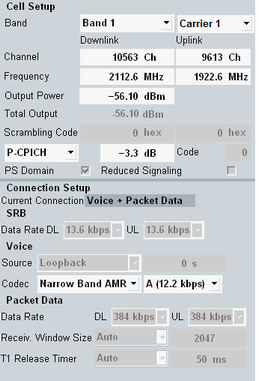

The main view provides only the most important settings for fast access while the configuration dialog provides all settings.
Exception: Parameter "Reduced Signaling" is not available in the configuration dialog.

If a multi-carrier scenario is active, most settings can be configured per carrier. The cell setup area shows settings of the currently selected carrier and common settings.
For a single carrier scenario, the carrier selection field is hidden.
- Most important RF settings (downlink per carrier)
See "Signal Routing" - Scrambling codes (downlink per carrier)
See "Primary Scrambling Code" and "Uplink Scrambling Code" - Downlink physical channel settings (per carrier, select a channel to access its settings)
See "Physical Channel Downlink Settings" - PS domain (common setting)
See "Packet Switched Domain" - Reduced signaling (common setting)
Enables or disables the reduced signaling mode. For an introduction to this mode, see "Reduced Signaling Mode".
Contains the most important connection configuration parameters. Depending on a connection type (for example, voice, test mode,...), the related connection parameters in the lower part are shown. See "Connection Configuration".
If no connection is established, select the parameters to be used for the next mobile terminated call.
In the state "Connection Established", the values used for the current connection are displayed. In addition, during a packet data connection, the current SRB data rate in DL and UL is shown.
If a CS and PS multicall is established, information relevant for the CS voice call and for the PS packet data call is displayed.
Remote command: